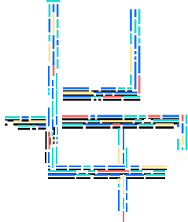

Features
1
Containerized Development
Start from scratch using lightweight containers that are easily reproducible to match your production environment.
2
Rapid Iteration
Lightning fast round-tripping through edit, build, and run allows real-time performance insights, regardless of what development phase you’re in.

3
Integrated DevOps Pipeline
Get into production fast with a preconfigured DevOps pipeline that can be tailored to your needs.
4
Diagnostic Services
Add capability at development time to improve problem determination in production.
5
Intelligent Feedback
Best practices and immediate feedback to help improve your application.